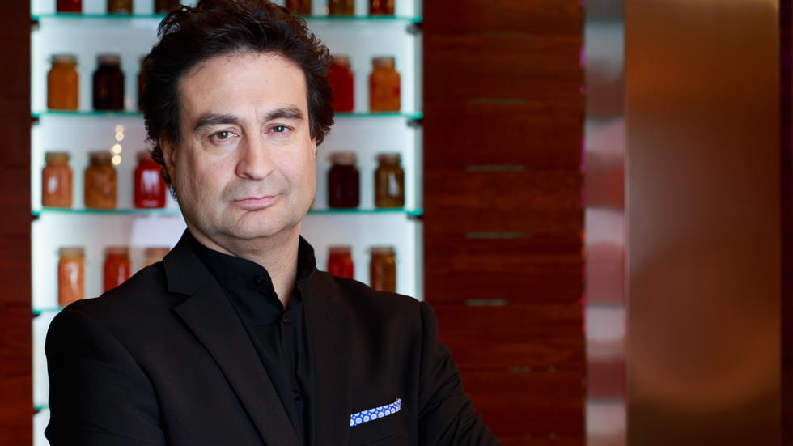

Solomillo de carne
Trozo de carne hecho para experimentar nuevas sensacionesy nuevos sabores que te hara descubrir un nuevo mundo
Lubina al horno
Lubina cocinada para celebrar importantes eventos, aprovecha esa ocasión y atrévete con la lubina
Paella de marisco
Comida muy española familiar y típica. A demás cuenta con marisco como gambas, sepia...
Tortilla de patatas
Melosa tortilla de patatas hecha por 6 huevos de la que disfrutarás y querrás volver a repetir
Macarrones con queso
Deliciosos macarrones con carne picada y queso parmesano fundido delicioso

Pizza
Diversos tipos de piza jugosa. Barbacoa, 4 quesos,jamón y queso
Revuelto de patatas y huevo
Sensación explosiva de sabores con patata, huevo semilíquido, jamón serrano
Hamburguesa
MC Real extreme hamburguesa
Cosas sobre el chef

¿Quién es?
Pepe Rodríguez
Desde que era pequeño le apasiona el mundo de la cocina y como su madre no podía hacerse cargo de la casa su hermano y él se turnaban las tareas del hogar, entre ellas cocinar. Fue ahí cuando descubrió su pasión por las cocina.Comenzó a trabajar en un restaurante llamado el bohío donde aprendió bastante conceptos gastronómicos. Fue condecorado chef y actualmente trabaja en las galas de masterchef de juez degustador